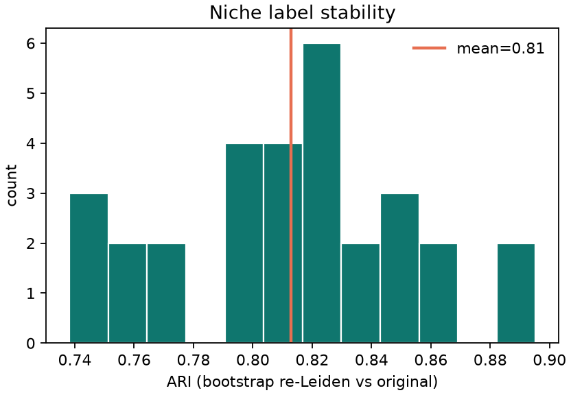
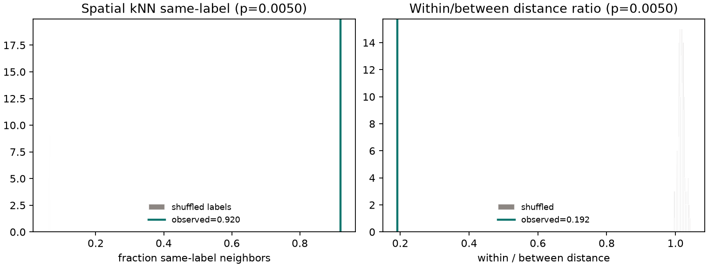
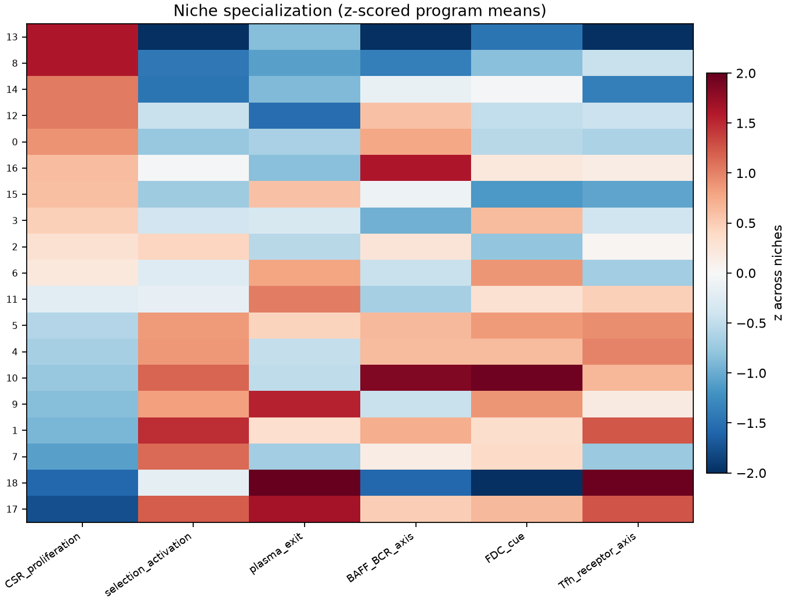
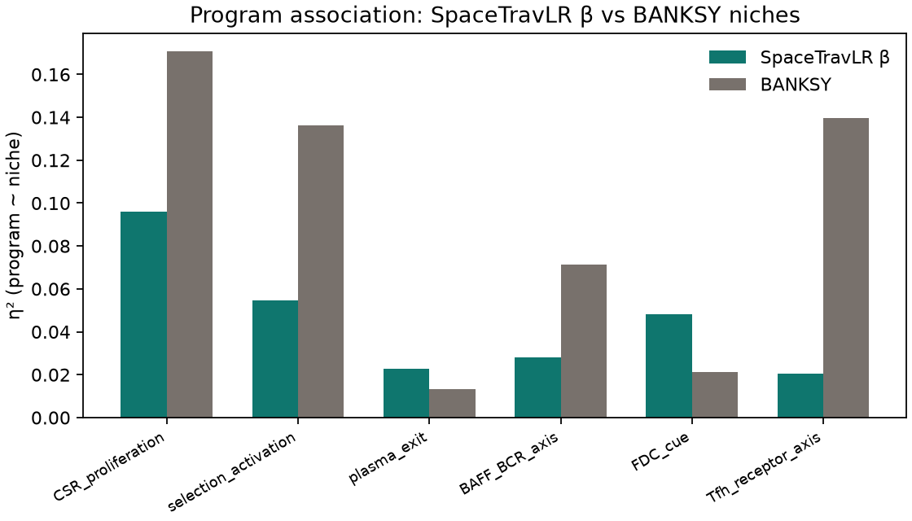
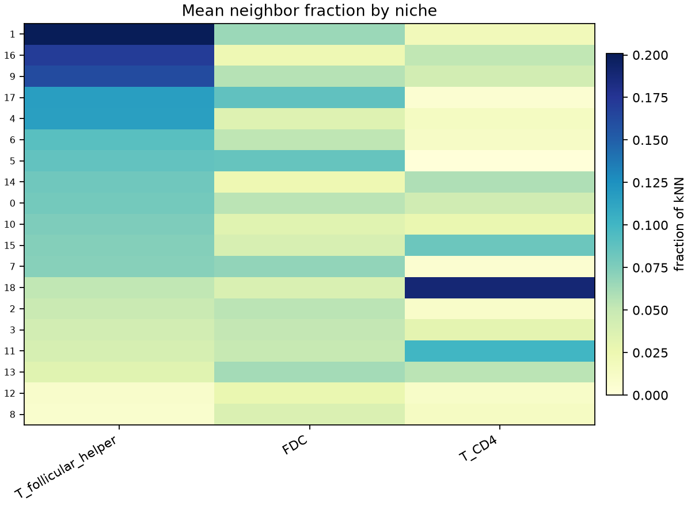
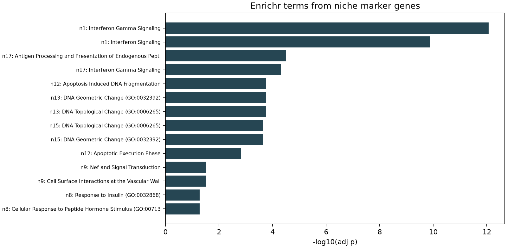

Functional proof for SpaceTravLR β niches
Human tonsil snRNA germinal-center B cells (n=1848, k=19 niches). Evidence is statistical + biological and does not treat expression-derived Light/Dark/Intermediate zone labels as truth.
Companion method comparison: plucky-meadow-perf.here.now (β vs BANKSY / COVET / NicheCompass).
perm p=5.0e-03
perm p=5.0e-03
1. Statistical evidence
- Stability: 80% cell bootstrap + re-Leiden on the β PCA latent yields mean ARI 0.81 (5–95%: 0.75–0.88) vs the original niches.
- Spatial contiguity: 92.0% of spatial kNN edges share a niche label (null≈6.4%, permutation p=0.0050).
- Compactness: within-niche / between-niche distance ratio=0.192 (null≈1.017, p=0.0050).
- Latent separation: silhouette=0.223 on the β PCA embedding.



2. Independent GC functional programs
Gene programs from GC biology literature were scored after niche discovery (not used to cluster). Association with niches is tested by ANOVA η² and label-permutation.
| program | n_genes | genes | eta2_vs_niche | anova_p | eta2_perm_p | moran_I | mean | std |
|---|---|---|---|---|---|---|---|---|
| CSR_proliferation | 5 | AICDA,CXCR4,FOXO1,BCL6,TOP2A | 0.0959 | 8.58e-30 | 0.00498 | 0.155 | 0.544 | 0.833 |
| selection_activation | 5 | CD83,CXCR5,CD40,LMO2,BATF | 0.0546 | 5.65e-14 | 0.00498 | 0.101 | 0.189 | 0.729 |
| FDC_cue | 4 | FCER2,CR2,FDCSP,CXCL13 | 0.048 | 1.25e-11 | 0.00498 | 0.0717 | 0.391 | 0.697 |
| BAFF_BCR_axis | 5 | TNFRSF13B,TNFRSF13C,BANK1,CD86,CR2 | 0.0282 | 3.01e-05 | 0.00498 | 0.0244 | 0.335 | 0.666 |
| plasma_exit | 2 | IRF4,PRDM1 | 0.0227 | 0.00102 | 0.00498 | 0.0227 | -0.00165 | 0.664 |
| Tfh_receptor_axis | 4 | ICOS,PDCD1,CXCR5,CD40 | 0.0206 | 0.00352 | 0.0149 | 0.016 | -0.175 | 0.542 |




3. Microenvironment: Tfh / FDC contacts
For each GC cell, fraction of full-tissue spatial neighbors that are Tfh or FDC. Niche ID explains neighbor composition beyond chance.
| neighbor_type | eta2_vs_niche | anova_p | eta2_perm_p | global_mean_fraction |
|---|---|---|---|---|
| B_germinal_center | 0.313 | 5.42e-135 | 0.00498 | 0.64 |
| T_follicular_helper | 0.296 | 1.79e-125 | 0.00498 | 0.0815 |
| T_CD4 | 0.154 | 1.74e-54 | 0.00498 | 0.0317 |
| FDC | 0.0861 | 7.11e-26 | 0.00498 | 0.051 |

4. Niche marker genes → pathway enrichment
Wilcoxon DE (niche vs rest, FDR<0.05, logFC>0.25) then Enrichr (GO BP / Reactome). Top hits:
| niche | library | term | adj p |
|---|---|---|---|
| 1 | Reactome_Pathways_2024 | Interferon Gamma Signaling | 8.53e-13 |
| 1 | Reactome_Pathways_2024 | Interferon Signaling | 1.28e-10 |
| 1 | Reactome_Pathways_2024 | Cytokine Signaling in Immune System | 4.97e-09 |
| 1 | Reactome_Pathways_2024 | Translocation of ZAP-70 to Immunological Synapse | 9.48e-09 |
| 1 | Reactome_Pathways_2024 | PD-1 Signaling | 1.36e-08 |
| 1 | Reactome_Pathways_2024 | Phosphorylation of CD3 and TCR Zeta Chains | 1.36e-08 |
| 1 | GO_Biological_Process_2025 | Antigen Processing and Presentation of Endogenous Peptide Antigen (GO:0002483) | 1.92e-08 |
| 1 | Reactome_Pathways_2024 | Endosomal Vacuolar Pathway | 3.75e-08 |
| 1 | Reactome_Pathways_2024 | Downstream TCR Signaling | 4.74e-08 |
| 1 | GO_Biological_Process_2025 | Antigen Processing and Presentation of Exogenous Peptide Antigen (GO:0002478) | 6.28e-08 |
| 1 | GO_Biological_Process_2025 | Positive Regulation of T Cell Mediated Cytotoxicity (GO:0001916) | 6.28e-08 |
| 1 | GO_Biological_Process_2025 | Regulation of T Cell Mediated Cytotoxicity (GO:0001914) | 7.57e-08 |

5. Spatially filtered β features encode immune axes
The 159 kept β features (Moran × η², FDR, decorrelated) concentrate on known GC pathways — not arbitrary noise.

6. Interpretation
- β niches are stable (bootstrap ARI≈0.81), spatially contiguous (92.0% same-label kNN vs ~6.4% under shuffle), and compact (within/between distance ratio=0.19).
- Independent GC programs associate with β niches above label-permutation (η² up to 0.096). BANKSY shows higher program η² by construction (expression niches); β niches still carry functional signal while preserving microniche geometry BANKSY loses.
- Niches differ strongly in Tfh / FDC / T helper contact rates (Tfh neighbor η²=0.30), i.e. distinct microenvironments.
- DEG→Enrichr recovers antigen presentation, interferon / cytokine signaling, and PD-1 pathway terms.
- Kept β features concentrate on IL21, BAFF/APRIL, CXCL13, PD-1/CD28, WNT, TGF-β, ECM–integrin, and TF modulators.